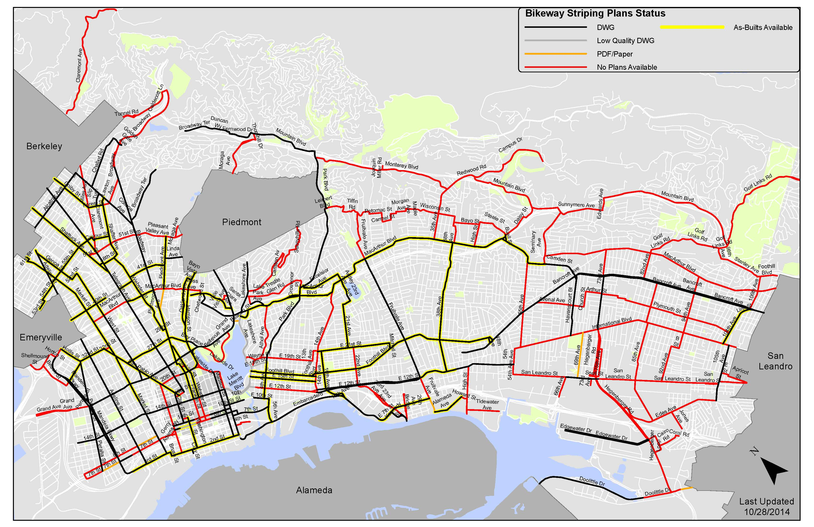

This map is used to track the completion and status of striping plans, including dwg files, as-builts, and pdf files of legacy projects. The map includes hyperlinks to the folders where specific plans are filed.
Purpose
This map is a record keeping tool for managing the large number of striping plans that the Bicycle Facilities Program has accumulated. The map shows all on-street bikeways (existing or proposed) in various categories. See the file “Attribute_Table_for_Join.xlsx” and refer to the second worksheet for metadata on these categories. Note that the map does not track the design completion of particular projects. This information is documented in the biannual map titled “Design Status of Bikeway Projects.” The Striping Plans Status Map indicates what type of drafting documentation (e.g., as-built, CAD file, paper-only plan) is available for particular roadway segments.

Location
\\oakland.local\pwa\Transportation\Bike-Ped_Program\Projects\Bikeways-striping\!File-Management\Striping-Plans-Status-Map
Functionality
The map is in three formats: mxd (ArcMap), pmf (ArcReader), and pdf. In the ArcGIS formats the maps include hyperlinks to the folders on the shared drive where the plans reside. Unfortunately, this functionality doesn’t appear to be available in pdf.
Updates
The map does not have an update schedule. To make updates, edit the necessary data in “Attribute_Table_for_Join.xlsx”. Reopening the mxd or pmf file will cause the map to refresh with the new data. Note that the xlsx file cannot be edited while the mxd or pmf file is open (due to the data join).
Issues & Opportunities
The segments in the xlsx file were exported from the bikeway segments database. Thus changes in the database are not automatically reflected in the xlsx file. This will be an issue when new segments are added to the database (either by adding entirely new segments or breaking existing segments into multiple segments to match changes in existing conditions). Those new segments will need to be added manually to the xlsx file.